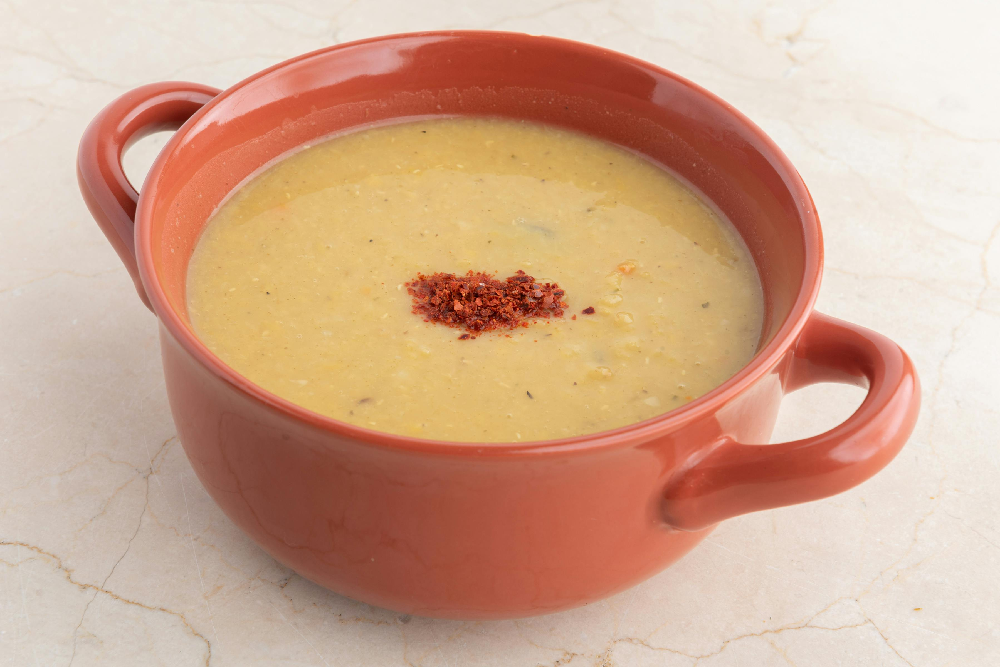

Lentil Soup

Recipe for a hearty lentil soup
This is a recipe for an easy, thick lentil soup with chunky veg.
It will take around 30mins, it's tasty and it's even better a day later.
This soup recipe only need four ingredients plus stock and extra pieces of ham to add flavour.
Ingredients
- Half a pack of lentils
- 1 large onion or 2 small onions
- 4 carrots
- 1 white turnip
- 2 stock cubes, chicken or ham, or veg if vegetarian
- Optional: 3 rashers of smokey bacon
Steps
- Half-fill a large pot with cold water and bring to boil
- Meanwhile: rinse lentils in a sieve, & dice carrots, turnips and onions. Add to water with stock cubes
- Once boiling, turn heat down a notch or two and simmer for 20mins, stirring occasionally. Add salt and pepper, and pieces of bacon if using.
- Turn heat off and cover pot. Just let it sit and transfer to Tupperware once cool
- It should last a few days upto a week in the fridge.
Home